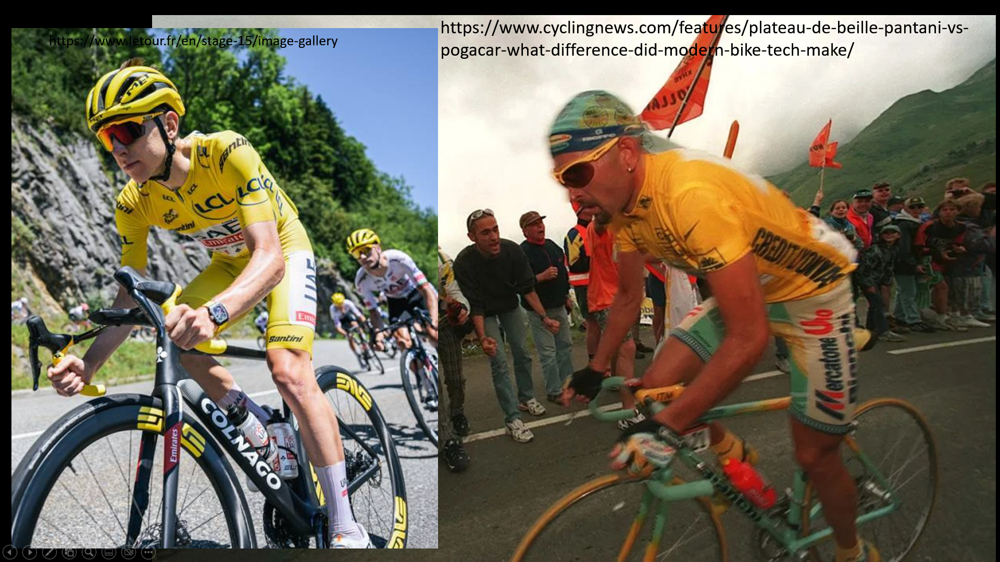
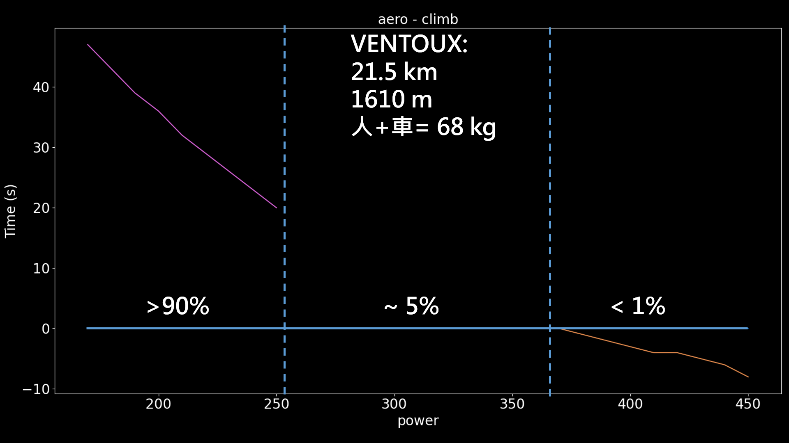

Pogacar 是否已經超越 Pantani，從貝雷高地、風凸山與 Hautacam 來分析
|  |
|---|
| 圖一：Pogacar 與 Pantani 裝備差異 |
Pantani 在 1998 環法創下貝雷高地的最速紀錄，2024 環法第十五站是皇后站，最後也是要爬上貝雷高地，Pantani 的紀錄一次被 GC 前三名刷掉。2025 年環法 Pogacar 在 Ventoux 與 Hautacam 也都拿下了 KOM，雖然 Riis 的 Hautacam 最速紀錄更快，但是因為隨後他承認用藥所以就不算，所以現在早期選手紀錄留下較多的就是 Pantani。雖然 Pantani 也曾經因用藥被禁賽，但至少 1994 年是沒有被檢出用藥，所以在 1994 年的紀錄拿來計算應該是沒問題。而且 Pogacar 也是在 2025 這一年內拿下這兩個路段 OM，當然整體路線安排雖然有差，但至少整體情況也是比較相近的。
一、貝雷高地(Plateau de Beille) 15.46 km/1227 m
我們先來看看 2024 年 GC 前三名在貝雷高地爬升的瓦數跟推力比，Pogacar 在該路段的表現是刷進了 40 分鐘內，而 Vingegaard 跟 Evenepoel 雖然沒進，但也分別刷掉了 Pantani 三分鐘與一分鐘。
表一：貝雷高地各選手完賽時間
| 時間 | 體重 (kg) | 預估瓦數 (W) | W/kg | |
|---|---|---|---|---|
| Pogacar | 39:30 | 64 | 444 | 6.9 |
| Vingegaard | 40:38 | 60 | 407 | 6.8 |
| Evenepoel | 42:30 | 61 | 393 | 6.4 |
| Bernal | 1:05:34 | 60 | 243/250 | 3.9 |
| Pantani | 43:28 | 58 | ?? | ?? |
*Bernal 250 為公開數據
早期選手用車因為較重，所以大山站一定要使用輕量化的爬坡車，但是現在因為碳纖維的關係，所以空力跟重量可以兩者兼具。另外裝備也是有差，像衣服就差很多，早期選手車衣跟袖子都鬆鬆的，現在則是幾乎貼著身體不會有皺褶，光風阻就小很多，材質也好很多，這邊來詳細看一下兩者裝備差異。
表二：Pogacar(2024) 與 Pantani 裝備差異
| Pantani 的裝備…… | ……Pogacar 的裝備 | |
|---|---|---|
| 車重 (kg) | 6.96 | 7.3 |
| 變速 | 54/44-11/23 | 50-44/11-34 |
| 曲柄長 (mm) | 170 | 165 |
| 輪組 | 1600 g/ 10 mm | 1452 g/ 50 mm |
| 外胎 (mm) | 21 mm tubular | 28 mm tubeless |
| 車架 | Climb Al | All-round C |
| 把手 | Climb Al | Aero C |
| 安全帽 | – | Aero |
| 衣服 | Jersey+bib | skinsuit |
| 圖一：Pogacar 與 Pantani 裝備差異 |
雖然說 pogacar 裝備滿多是碳纖的，但整體來說還是 Pantani 的車比較輕，早期的低框輪組還比現在 50 高的碳纖輪組重，猜測應該是輕在飛輪和碟盤。Pantani 用 9 速的 Record 應該是比用 DA 12 速還要再輕，不過使用的齒比真的是超級硬。而輪框雖然是超低框但還是比較重，早期的服裝也不像現在這麼貼身，也穿較短的襪子，現在選手都穿空力襪。輪胎現在也是有無內胎的技術，所以現在幾乎看不到車隊在使用管胎，而在阻力上總重量越輕爬坡就越輕鬆。但職業選手即便是爬坡還是很快，所以現在大部分的車手會選擇空力。當然大環賽也不是只有爬坡，還有下坡跟平路，所以也選用較寬較重的 28 C，就個別部分來比較阻力的話。輪組不論是重量或是空力都是 Pogacar 用的較小，安全帽則是不戴風阻會比較小，當然大環賽也常常有車禍，而且現在也強制戴安全帽，大家都一樣，畢竟摔一次撞到頭就沒有下次了，所以阻力雖然比較大但還是要戴，穿著的部分當然也是連身衣+空力襪阻力更小，所以整體來說現代裝備可以讓風阻小很多。
表三：貝雷高地 Pantani 完賽瓦數預估
| 時間 | 體重 (kg) | 預估瓦數 (W) | W/kg | |
|---|---|---|---|---|
| Pogacar | 39:30 | 64 | 444 | 6.9 |
| Pantani | 43:28 | 58 | 373 | 6.4 |
| Pantani* | 42:15 | 58 | 373 | 6.4 |
*為使用現代裝備的修正
二、Hautacam 13.6 km/1009 m
表四：Hautacam 一些選手的紀錄
| 時間 | 年分 | W/kg | |
|---|---|---|---|
| Bjarne Riis | 34:40 | 1996 | |
| Pogacar | 35:08 | 2025 | 6.26 |
| Pantani | 35:38 | 1994 | 6.39 |
| Vingegaard | 36:34 | 2022 |
2025 年 Pogacar 使用未上漆的 Y1RS 騎乘，重量只有 6.9 kg，所以就整體重量來說其實跟以前沒差多少，畢竟 UCI 6.8 公斤的下限也維持很久了。所以有人覺得我瓦數估出來很低，是因為我把空力的優化也考慮進去，還在用早期的空力數據我才覺得高估了。所以單純看推力比就不一定準，Pogacar 推力比搞不好也沒有 Pantani 高，不過反正都是估算，你覺得誰準就信誰。
表五：Hautacam Pantani 完賽瓦數預估
| 時間 | 體重 (kg) | 預估瓦數 (W) | W/kg | |
|---|---|---|---|---|
| Pogacar | 35:08 | 2025 | 6.26 | |
| Pantani | 35:38 | 1994 | 6.39 | |
| Pantani* | 34:43 | 6.39 |
今年 Hautacam Pogacar 比 Pantani 快 30 秒，如果 Pantani 用現代裝備的話可以再快 55 秒，算起來的話 Pantani 就可以比較快。
三、風凸山 Ventoux 21.5 km/1610 m
表六：Ventoux 一些選手的紀錄
| 時間 | 年分 | W/kg | |
|---|---|---|---|
| Pogacar | 54:31 | 2025 | 6.26 |
| Vingegaard | 54:33 | 2025 | |
| Iban Mayo | 55:51 | 2004 | |
| Pantani | 57:33 | 1994 | 6.28 |
| Pantani* | 54:42 | 6.28 |
而在 Ventoux 如果 Pantani 用現代裝備，則是可以快約 2:49，不過 Pogacar 在這快了三分鐘，當然會差這麼多主要還是因為，Vinegegaar 在 Ventoux 有跟 Pogacar 拉扯。而在 Hautacam 則是 Pogacar 獨走，所以 Pogacar 跟 Pantani 兩者比起來，個人覺得應該是沒有很明顯的差距。當然從這邊的計算也知道，風阻對於選手來說差異還是很大，在平均坡度 7~8% 的坡，空力還是能讓他們少約 3% 的時間。而且現在空力車也到了 6.8 kg 下限，在輕下去也沒意義。
四、爬坡車還有什麼優勢
今年 Pogacar 與 Vingegaard 幾乎都用空力車騎完環法全程，在風凸山還跑出環法史上最佳成績，當然對於選手來說選空力車一定比較快，即便不是 GC 騎空力車也是有。而今年環法第 13 站是爬坡個人計時，也是有選手選用即時車架一路衝上去，計時車架比爬坡車架重了快一公斤，當然也是用使用空力車架的，不過前幾名就沒看到使用爬坡車架的。我們也可以來看一下跟選手的差異，以選手來說還是可以用推力 6 爬完風凸山，但如果換成一般市民選手或普通人，推力只有 5 甚至不到 4 的，用爬坡車在風凸山就會快上幾十秒。所以對於非選手來說爬坡車優勢還是很明顯的，而且世界級的選手大概只有不到 1% 的人，剩下超過 95 % 的人騎輕量爬坡車還是比較快。
|  |
|---|
| 圖二：空力車與爬坡車爬 Ventoux 的時間差 |
所以對於普通人來說瓦數就是一個重點，瓦數沒那個高爬坡輕量還是比較快，而且空力車就算真的可以到 6.8 kg，那花費至少要 20 萬以上，不過其實就是錢的問題而已，沒有錢就是你的問題。對於普通人會參加的賽事來說，也是有純爬坡賽的，像台灣的 KOM 就是一個純爬坡賽，而且一般人參加的賽事也不受 UCI 限制，你要騎 5 kg 的車也沒人管，像英國就有個短陡坡賽，參賽者的車還可能不到 5 kg。所以對於一般人來說，爬坡車優勢還是有的，不過我自己還是會選空力車就是了。